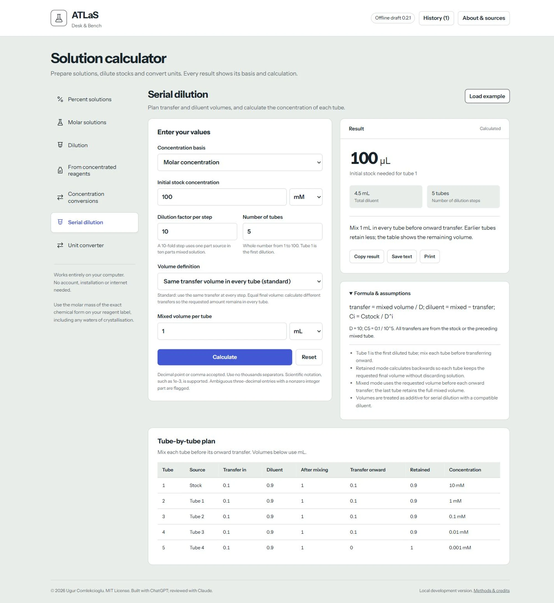

ATLaS Solution Calculator
Prepare solutions, convert concentrations and plan serial dilutions. Download ATLaS and open it in your browser, even without an internet connection.
Version 0.2.1 (preview). A single HTML file; no account, installation or internet needed.

What ATLaS does
Seven calculators with visible formulas, assumptions and results you can copy, save or print.
Prepare solutions
Calculate percent and molar solutions, correct for mass assay, and prepare dilutions from concentrated reagents.
Convert concentrations
Convert mass concentration and molarity using molar mass, or convert percent w/v and mass concentration.
Plan serial dilutions
See transfer and diluent volumes for each tube. Use equal transfers or leave the same final volume in every tube.
Keep a session record
Copy individual results or the full session history, save text files and print calculations. History clears when you reload.
How to use it
- Download the ZIPUse the button above.
- Extract the filesKeep the included licence files.
- Open atlas-solution-calculator.htmlUse a current Chrome, Edge or Firefox browser.
- Choose a calculatorEnter your values or load an example. Save any results you want to keep.
Questions
Where are my entries stored?
Entries and history stay in memory on your computer and are never sent to a server. Reloading or closing the app clears the session. Copy or save results before you close it.
Do I need to install anything?
No. The HTML includes its calculation code and fonts. Download, extract and open it in your browser.
What should I check before preparing a solution?
Use the molar mass of the exact chemical form on the reagent label, including any waters of crystallisation. Check the required concentration basis, assay and density. ATLaS displays calculation assumptions; follow your laboratory procedures for handling reagents.
Does this include buffer calculations?
No. Buffer preparation is planned as a separate tool.
Can I change it or build on it?
Yes. ATLaS Solution Calculator is open source under the MIT License. You may use, change and share it, including in your own projects, as long as you keep the copyright notice and the licence text, which credit the original author. The source is on GitHub and the licence is in LICENSE.
I found a bug or have a suggestion.
You can report it on GitHub Issues. Open GitHub Issues